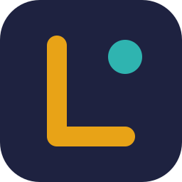

Connect to your Leenax server
Leenax Studio opens your own server in this window. Type the address you use in the browser.
This app keeps only the address and the window size. You sign in on the server's own page; your password and keys never leave the server.